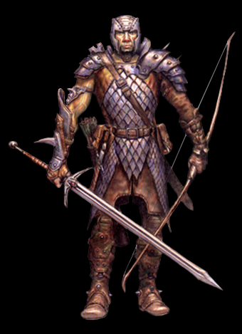

| 파이터 | | | 매직 유저 | | | 시프 | | | 클레릭 | | | 드워프 | | | 엘프 |
| 기본 정보 | | | 기본 조작 | | | 이도류 | | | 고급 조작 | | | 콤보의 법칙 | | | 12연사 |
FIGHTER
|  | 전사(Fighter) - Weapon and Combat Master 임무수행 중인 기사, 정복을 일삼는 군주, 냉혹한 용병, 산적 두목, 노련한 고참 병사, 왕의 경호원.......이 세상에서 전사는 가장 다양하며 또한 가장 빈번하게 접할 수 있는 클래스다. 그래서 그들의 가치관, 배경 또한 아주 다양하다. 든든한 수호자 일 수도 있고 잔인한 약탈자 일 수도 있고 용감한 모험가가 될 수도 있다. 신념과 정의를 위해 죽음에 맞서는 용사일 수도 있고 사익을 위해 남을 죽이는 것에 전혀 양심의 가책을 느끼지 않는 악당일 수도 있다. 후원자에게 보수를 받으며 임무를 수행하는 에이전트 같은 스타일일 수도 있고 큰 돈벌이를 기대하며 위험을 즐기는 탐험가 같은 모험가 스타일일 수도 있으며 위험에 맞서며 약자를 지키는 것을 보람으로 느끼는 기사 스타일일 수도 있다. 그러나 개인적인 동기가 어떻든, 전사는 천성적으로 전투와 모험에 희열을 느끼며 산다. 이름에서도 알 수 있듯이 전사는 파티내에서 가장 싸움(戰)에 적합한 클래스로 모든 표준 무기와 갑옷의 사용이 가능하다. 어떤 무기를 어떻게 잘 다룰 것인가, 어떻게 싸우는 것이 효율적인가 연구하고 훈련하며 자신만의 전투기술을 단련한다. 다른 동료들이 마법과 장거리 공격으로 지원해주는 사이에 적사이로 돌진해서 접근전을 펼치는 것이 주된 역할이며 상황에 따라 다른 지원 없이도 장거리 공격을 펼칠 수 있다. |
Status
게임에서의 특징 대부분의 공격이 빠르고 안정적이며 빈틈이 없다.
더불어 높은 방어력과 HP를 보유하고 있으며 가드가 가능하기 때문에 초보자도 다루기가 쉬운 클래스라 할 수 있다. 무엇보다 특별한 약점이 없다는게 가장 큰 강점이다. - 스태프류와 완드류를 제외한 모든 무기의 사용이 가능하다.
- 숏소드 장비시 이도류로 바뀐다. 다만 어떤 무기를 들고 있든지 무조건 노멀소드+숏소드의 형태로 바뀐다. - 아이템 창의 가드 커맨드를 이용해 가드 할 수 있다. - 방어력이 전 클래스중 가장 높으며 HP도 드워프를 제외하면 가장 많다. - 단검류의 투척속도가 전 클래스 중 가장 빠르며 오일류의 투척속도 또한 클레릭과 함께 가장 빠르다. - 라이트닝 볼트 반지가 전 클래스 중 가장 많이 나오기 때문에 에저홀덴을 상대하기에 부족함이 없다. 이름과 타입 보통 대부분은 타입 I (브레슬릿)을 많이 선택한다.
그러나 시간을 조금이라도 단축시킬 필요가 있다면 타입 G (건틀릿)을 선택하는 것도 좋다. 다크워리어1을 투척무기 없이 잡을 생각이라면 타입 F (스펠 터닝 링)도 고려 해 볼만 하다. (이후의 셰도우 엘프의 파이어 볼, 텔'아린의 주문, 비홀더의 특수 공격에도 유효) 기본 무기와 초기 레벨/HP, 보유 아이템 - 기본 무기 :
- 초기 레벨/HP(단위:픽셀) : 12/112 - 초기 보유 아이템 : (가드(방패)는 팔거나 없앨 수 있는게 아니므로 실질적으로 활용 가능한 아이템 칸은 5칸) 레벨과 HP, 기본 무기 |